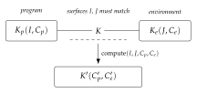

Chapter 8
Interactive GSLTs, and the Site of Interaction
8.1 Naming the site of interaction
A GSLT is any multi-sorted rewrite theory. Most of what we want to do requires more: we want to know where the theory’s programs meet whatever they compute against.
A GSLT \(G = (\Sigma,E,R)\) is interactive when it carries, over and above the triple:
a distinguished interacting sort \(P\) of programs;
a binary interaction constructor \(K(P,E)\), representing the interaction of a program with an environment \(E\) — an operand of the interacting sort, with \(E = P\) in the process-calculus instances;
at least one base rewrite rule in \(R\) whose left-hand side features \(K\) — the interaction rule — generating a labelled transition system on \(P\) modulo \(\equiv\) on which bisimulation is the intended equivalence.
\(\catiGSLT\) is the category whose objects are interactive GSLTs and whose morphisms are theory maps — sort- and operator-preserving translations respecting \(\equiv\) and \(R\) — that are bisimulation-preserving on the interacting sort.
The constructor \(K\) and the \(K\)-headed rule are exactly what a bare GSLT lacks. A GSLT is any multi-sorted rewrite theory; an interactive GSLT names a site of interaction and a rule that fires there. The motivating instances span calculi with and without binding: CCS [84] with \(P\) the processes, \(K = {\mid}\) and interaction by complementary actions; the rho calculus with \(K = {\mid}\) and \(R \ni \textsc{Comm}\); the \(\lambda\)-calculus with \(P\) the terms, \(K = \mathrm{App}\), \(\equiv\) \(= \alpha\) and \(R \ni \beta\); and the interaction categories of Abramsky, Gay and Nagarajan [114], where \(K\) is composition along a shared interface.
8.2 The interaction cut
Definition 8.1 asks only that some rule mention \(K\). In every instance we care about, that rule has a great deal more shape, and naming the shape is what makes the constructions of Part III possible. Write the generating rule of \(R\) as \[\frac{(C_p', C_e') = \compute(I, J, C_p, C_e)} {K\bigl(K_p(I, C_p),\, K_e(J, C_e)\bigr) \longrightarrow K'\bigl(C_p', C_e'\bigr)} \tag{$\dagger$}\] distinguishing:
- the interaction constructor \(K\),
which brings two operands into contact. In rho and CCS, \(K = {\mid}\); in \(\lambda\), \(K = \mathrm{App}\).
- two introductions \(K_p(I,C_p)\) and \(K_e(J,C_e)\),
each a constructor separating an interaction surface (\(I\), \(J\)) — the part that must match for the cut to fire — from a continuation: \(C_p\) the program continuation, the rest of the computation, and \(C_e\) the environment continuation, the rest of the environment.
- the contraction \(\compute\),
a partial operation that, on a surface match, combines the two continuations into residuals \(C_p', C_e'\) repackaged by \(K'\).
The factoring is Milner’s [125]. In the polyadic \(\pi\)-calculus the input \(\mathrm{for}(y \leftarrow x)P\) is the pair \((x, \lambda y.P)\) and the output \(x!(u).Q\) is the pair \((x, [u,Q])\): the subjects \(x\) are the surfaces that must match, the objects \(\lambda y.P\) and \([u,Q]\) are the continuations, and the contraction is Milner’s pseudo-application, returning \(P\{u/y\} \mid Q\).

We call \((\dagger)\) an interaction cut: two introductions meet along matching surfaces and a contraction combines their continuations. Both sides are structured — the eliminand is not a bare term but an introduction carrying its own continuation.
Pseudo-application factors into two parts: the substitution \(P\{u/y\}\), by which a datum migrates from the environment continuation into the program continuation through a binder, and the release \(\mid Q\) of the environment’s residual. Binding is therefore one mode by which information migrates under the contraction, not an intrinsic feature of the cut. CCS realises the same shape with no migration at all, and is in this sense the paradigmatic instance.
8.3 Surfaces: nominal and structural
A surface may be carried in either of two ways, and which one a calculus uses is dictated entirely by the equational theory of \(K\).
It may be carried nominally, as an explicit \(I\) or \(J\) that must match — as the subject \(x\) does in rho and \(\pi\), or as complementary labels do in CCS. Or it may be carried structurally, by the rigidity of \(K\): when \(K\) is free, carrying no equations at all, position itself is unforgeable and the context \(K([\,],-)\) is the surface. A nominally degenerate — absent — surface is then not a missing match condition but one carried by the geometry of \(K\) instead.
The \(\lambda\)-calculus is exactly this case on the environment side. \(\mathrm{App}\) is free, and its rigidity supplies the surface that no explicit \(J\) records. Each application comprises a location together with a function and an argument; the location is the surface, the function is the program and the argument is the environment — or dually. A variable, we note, is not a surface, though it is closely related to one.
The dividing line is freeness, not commutativity. An equation on \(K\) is a congruence step: it rewrites adjacency without firing a cut. Associativity re-brackets adjacency, a unit law inserts and deletes neighbours, idempotence copies them, and associative–commutativity dissolves position altogether into a freely mixed soup. Each forges position, and only a free \(K\) admits no such move. We return to the consequences in Section 11.5.
8.4 Discriminating examples: three machines that are not interactive
It is easy to accumulate examples of a definition and hard to see what the definition excludes. We therefore work three non-examples in detail. They are not exotic: they are the machines with which most readers first learned what computation is.
8.5 Turing machines
A Turing machine is unproblematically a GSLT. Its sorts are states, tape symbols, and configurations; its operators build a configuration from a state, a tape, and a head position; its rewrites are the transition table together with the mechanics of moving the head. One can write the presentation down and a machine will accept it.
What it is not is interactive in the sense of Definition 8.1. To make it interactive one must exhibit an interaction constructor \(K(P,E)\) and a \(K\)-headed rule. The only plausible candidate for the site of interaction is the contact between the finite control and the tape: that is, after all, where the machine’s steps happen. But the definition asks that \(E\) be an operand of the interacting sort, and the tape is not of the sort of the control. The candidate cut is heterogeneous, and \(K(P,E)\) has no well-sorted instance.
The Turing machine has no naive presentation as an interactive GSLT. The cut would be between automaton and tape, which are of different kinds.
The failure is worth dwelling on because it is not a failure of expressive power. A Turing machine can compute anything a rho calculus term can compute. What it lacks is a site: a place in the syntax where two things of the same kind are brought into contact, such that one could ask what else might have been brought into contact there instead. The absence of such a site is precisely the absence of an environment in which the machine could be placed — which is another way of saying that a Turing machine is a model of a closed computation, and interactivity is about open ones.
8.6 Moore and Mealy machines
The transducers fail in the same way and differ from each other in an instructive second respect.
A Moore machine emits an output determined by its current state alone; a Mealy machine emits an output determined by its current state and the input symbol just consumed. Both are automata reading a stream, and for both the only candidate cut is between the machine and the stream — again heterogeneous, again no well-sorted \(K(P,E)\). On the first axis, then, the three machines fail identically, and one might think a single non-example would have sufficed.
It does not, because the pair discriminates along a second axis: the migration classification of Remark 9.2 below. Were one to force an interaction-cut reading on these machines, the Moore machine’s output is a function of the state alone, so nothing of the environment reaches the emitted value; the contraction would be pure release, the null-migration corner occupied by CCS. The Mealy machine’s output depends on the consumed symbol, so the environment’s datum does reach the residual; the contraction would migrate. Two machines that fail interactivity for the same reason nevertheless sit at different points of the classification that organises the successes.
Neither transducer has a naive presentation as an interactive GSLT, for the reason of Non-example 8.1. Under a forced reading they would occupy the null-migration and binding-migration positions respectively.
8.7 Presentation versus encoding
The reader will object that Turing machines can obviously be run inside a process calculus, and that the objection above is therefore pedantic. The objection is correct and the distinction it presses on is the important one.
There is a difference between a theory having a presentation and a theory admitting an encoding into one that does. Encoding a Turing machine into the rho calculus — reifying the tape as a collection of processes communicating on channels, and the head as a process that moves among them — produces a rho term whose behaviour simulates the machine. That is a genuine and useful construction. But the result is a statement about rho, not about Turing machines. The interaction sites in the encoded term are rho’s sites, and the questions one can ask of them are questions about rho contexts.
This distinction is the entire subject of Chapter 10, where the morphisms of the category \(\catGSLT\) turn out to be exactly the well-behaved encodings, and where the conditions under which an encoding tells you something about the source rather than merely about the target are isolated.